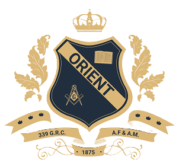

Grand Lodge of A.F. & A.M. of Canada
in the Province of Ontario

Celebrating 150 years of Freemasonry
Weston Masonic Temple
2040 Weston Road, Toronto, Ontario
_______________________________________
________________________________________
Regular Meetings are the 1st Wednesday at 7:30 pm September to June
Official Visit in March and Installation in October both at 7:00 p.m.
Late Banquet
Email orientlodge339@gmail.com
"Lux E Tenebris"